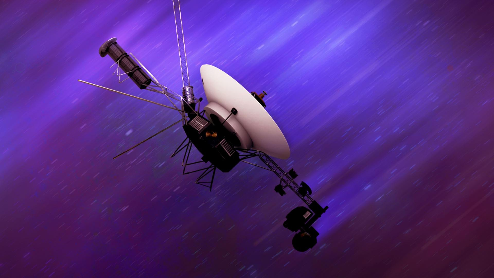
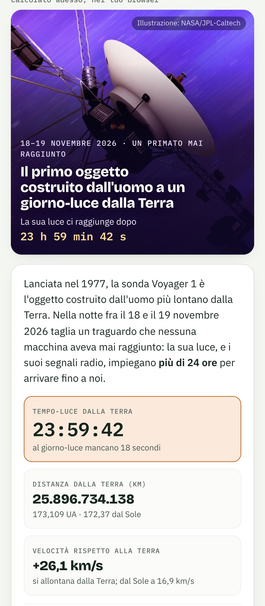

Il primo oggetto costruito dall'uomo
ad arrivare così lontano.
FONTE · NASA JPL HORIZONS · SORPASSO RICOSTRUITO
Un «pronto?» inviato adesso arriva domani.
La risposta, dopodomani.
Voyager 1 sarebbe a 17 km: oltre il crinale,
quasi a Firenzuola.
